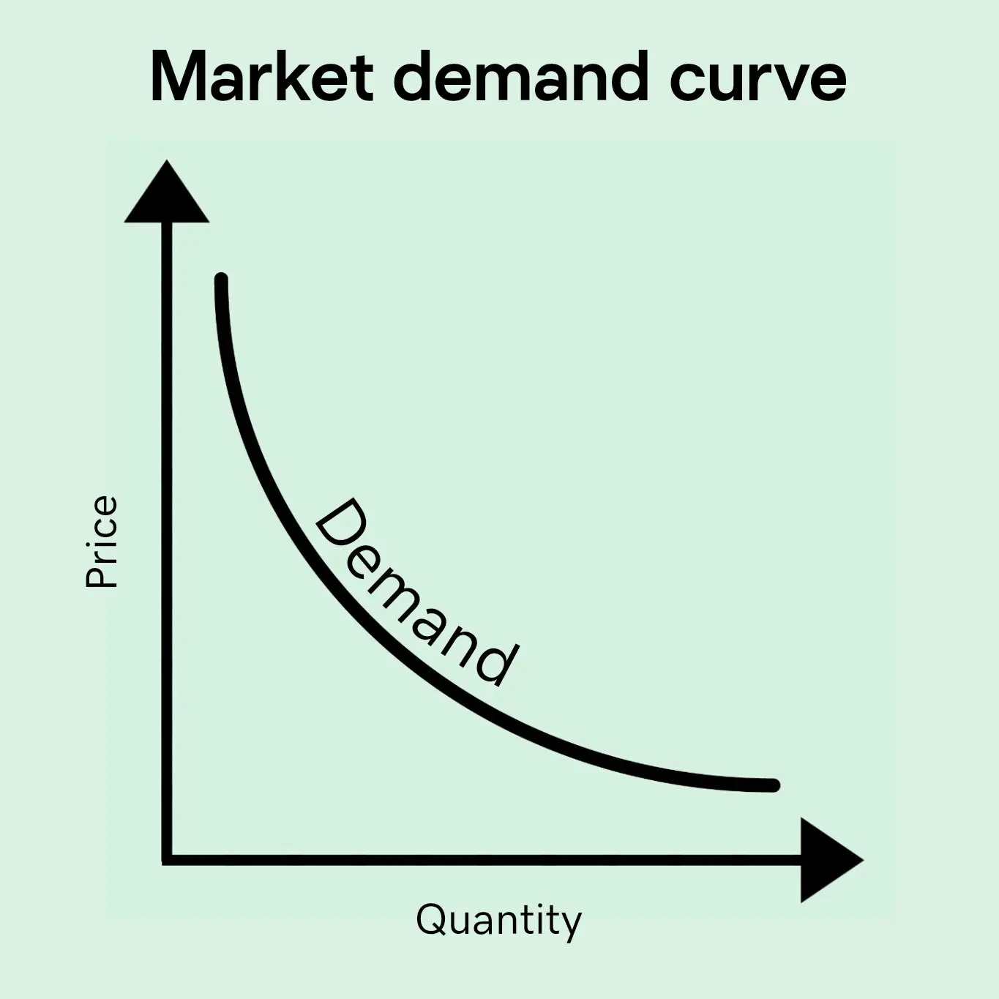
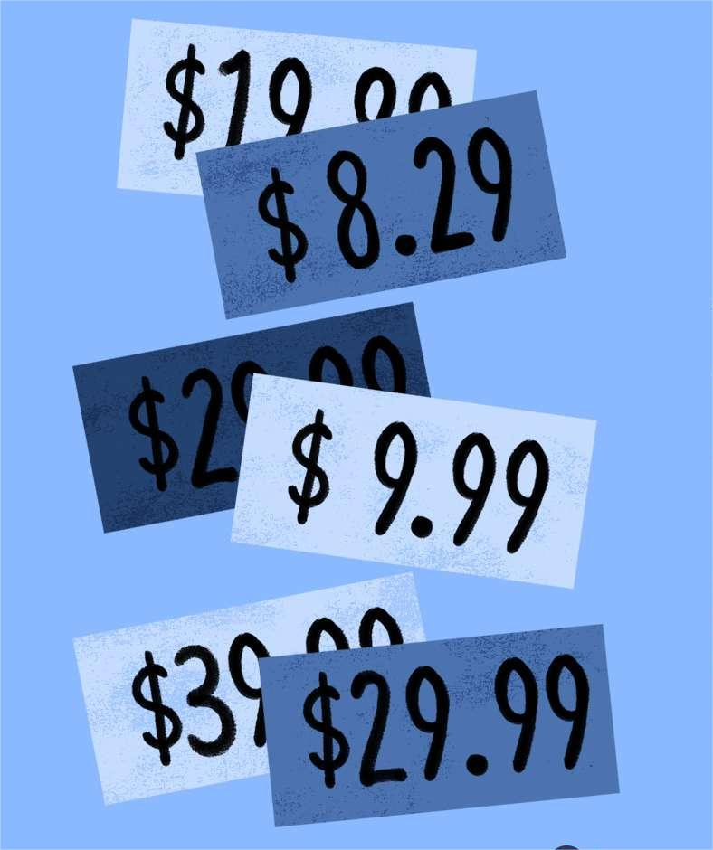
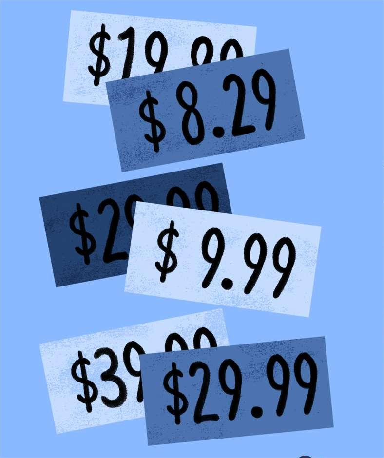
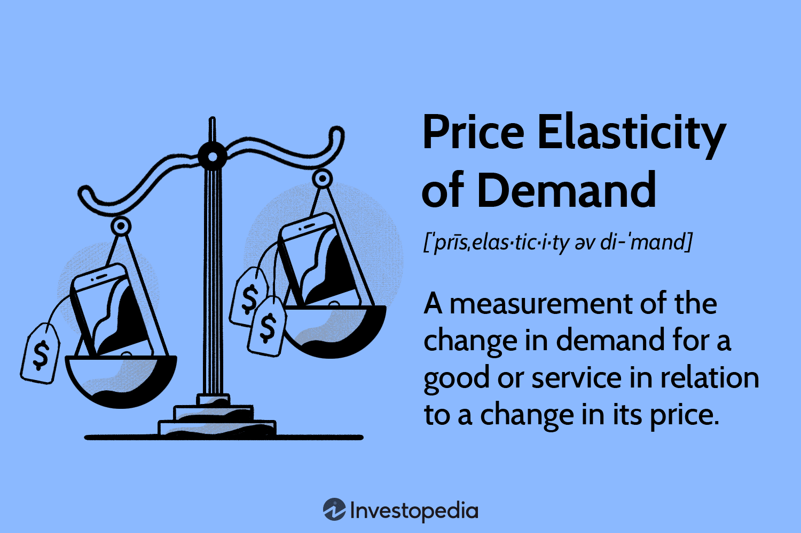
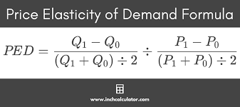
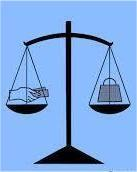
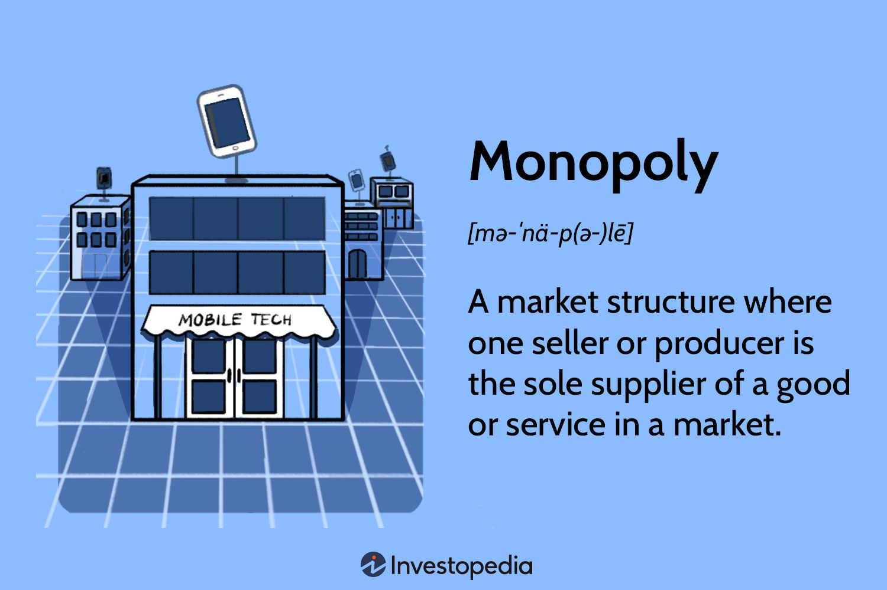
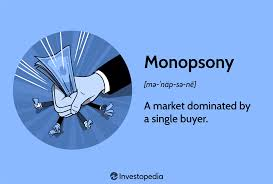

Lessons
Araling Panlipunan
Lesson 1
Demand
Ang Demand ay ang dami ng produkto o serbisyo na gustong bilhin ng mamimili sa partikular presyo at panahon. Ito rin ay ang kakayahan at kagustuhan ng tao na makamit bilhin ng produkto/serbisyo ay nakatakda sa pangangailangan at kagustuhan. Ang presyo naman ay 'determinant' o pinakamahalagang nagtatakda sa dami nila. Ang Batas ng Demand ay sinasabi na kung tumaas ang presyo, bababa ang demand, at kung bumaba ang presyo, tataas ang demand kung nasa Ceteris Paribus. Ang Ceteris Paribus ay kung ang presyo lang ang batayan sa pagbili/isang salik lang ang batayan.
Dalawang Konsepto
May dalawang konsepto na Substitution Effect at Income Effect na nagpapaliwanang na kung bakit may inverse ang Presyo at Demand sa Batas ng Demand. Ang Substitution Effect ay sinasabi na kung taas ang presyo, hahanap ng mas mura, at ang Income Effect ay sinasabi na kapag tumaas ang presyo, lumiliit ang kakayahang bilhin ng kita ng isang mamimili. Kapag bumaba, mas amtaas abg kakayahang bilhin ng kita.
Matematiks
Ang Demand ay pwedeng ipakita sa simpleng pormula na Kagustuhan + Kakayahan = Demand o f(P). May iba't ibang paraan naman para maipakita ang demand. Ang Demand Schedule ay isang talahayanan/table na ginagamit para maipakita ang relasyon ng presyo at demand. Ang Demand Function naman ay ang Mathematical Formula na ginagamit para mahanap ang demand o Quantity Demanded (Qd). Ito ay Qd=a-bP, na kung saan ang Qd ay Demand, ang 'a' ay ang dami ng demand, and 'b' ay ang slope ng demand function, at ang 'P' naman ay ang presyo at y-axis. Ang Demand Curve naman ay isang grapikong representasyon ng demand at presyo at yung relasyon ng dalawa. Kung tumaas, lilipat sa right, at kung bumaba naman, lilipat sa left.
Salik nakakaapekto sa Demand
Ang mga ito ay tinatawag na "Non-price Determinants". Ito ay ang Kita, populasyon, panlasa, presyo ng magkaugnay na produkto sa pagkonsumo, inaasahan ng mamimili sa presyo sa hinaharap, okasyon, at panahon o klima.

Lesson 2
Supply
Ang Supply ay ang dami ng produkto na gustong ibenta sa takdang presyo sa partikular na panahon ng produsyer/negosyante. ito ay ang pinakamahalagang determinant sa demand. Ang Batas ng Supply ay sinasabi na kung tumaas ang presyo, tataas ang kayang ibenta at dami ng gusto, at kung bumaba ang presyo, bababa ang kayang ibenta at dami ng gusto kung nasa Ceteris Paribus.
Matematiks
Ang Supply ay pwedeng ipakita sa simpleng pormula na Pagnanais + Kakayahan = Supply. May iba't ibang paraan naman para maipakita ang demand. Ang Supply Schedule ay isang talahayanan/table na ginagamit para maipakita ang relasyon ng presyo at dami ng supply. Ang Demand Function naman ay ang Mathematical Formula na ginagamit para mahanap ang supply o Quantity Supplied (Qs). Ito ay Qs=c+bP, na kung saan ang Qd ay Demand, ang 'c' ay ang dami ng supplykung ang presyo ay 0, and 'b' ay ang slope ng demand function, at ang 'P' naman ay ang presyo at y-axis. Ang Demand Curve naman ay isang grapikong representasyon ng demand at presyo at yung relasyon ng dalawa. Kung tumaas, lilipat sa right, at kung bumaba naman, lilipat sa left.
Salik nakakaapekto sa Supply
Ang mga ito ay tinatawag na "Non-price Determinants". Ito ay ang pagbabago sa teknolohiya, pagbabago ng presyo sa salik ng produksyon, pagbabago sa bilang ng mga nagtitinda, pagbabago ng presyo ng kaugnay na produkto, ekspektasyon ng presyo, okasyon, panahon o klima, kalamidad, dali ng pagkasira ng isang produkto, at ang subsidiya o tulong mula sa pamahalaan.
 

Lesson 3
Price Elasticity
Ang Elastisidad ay ang paraan upang masukat ang pagtugon ng mamimili at nagtitinda sa pagbabago ng presyo. Ang Elastisidad nd Demand ay ang pagsukat ng porsiyento ng reaction/pagtugon ng mamimili sa bawat porsiyeno ng pagbabago ng presyo. Pareho lang naman sa Elastisidad ng Supply, pero sa reaction/pagtugon ng entrepreneurs o negosyante.
Mga Uri ng Price Elasticity
Ang mga uri ng Price Elasticity ay elastic, di-elastic, unitary, ganap na elastic, at ganap na di-elastic. Ang Elastic ay kung saan na mas malaki ang porsiyento ng pagtugon ng Qd o Qs kaysa sa pagbabago ng presyo (/E/ > 1.) sa Di-Elastic, mas maliit naman ang porsiyento ng pagtugon ng Qd o Qs kaysa sa pagbabago ng presyo (/E/ < 1.) Sa Unitary, ang porsiyento ng pagtugon ng Qd o Qs at ng pagbabago ng presyo ay pareho (/E/ = 1.) Sa Ganap na Elastic, ito ay tinatawag din na "perfectly elastic", na kung saan ang pagbabago sa presyo ay magdudulot ng ∞ na pagbabago sa Qs o Qd, habang ang Ganap na Di-Elastic ay na kung saan ang pagbabago sa Qs at Qd ay hindi nagdudulot ng pagbabago sa presyo (/E/ = 0.)
Matematiks
Ang pormula na ginagamit para mahanap ang isang elastisidad para malaman ano ang elastisidad ay ang pormulang E=%ΔQ/%ΔD. Ang mga triangles dito ay sinasabi na 'change', kaya ang pormula dito ay ang porsiyento ng pagbabago ng Quantity sa taas ng porsiyento ng pagbabago ng Presyo. ang pormula naman para mahanap ng porsiyento ng pagbabago ng Quantity ay Q2-Q1/Q1+Q2/2, habang ang pormula para mahanap ng porsiyento ng pagbabago ng Presyo ay P2-P1/P1+P2/2.


Lesson 4
Market Equilibrium
Ang Equilibrium ay kung saan sa mamimili at nagbibili ang ang gustong baguhin ang kasulukuyang sitwasyon sa pamilihan, o ang pagkasundo ng bumibili at nagbibili sa isangpresyo at dami ng produkto. Ang Disequilibrium naman ay ang hindi pagkasundo ng bumibili at nagbibili/supply at demand. Kung tataas ang presyo at supply, tas bababa ang demand, magiging sobra ang supply, o surplus. Kung bumaba ang presyo at supply, tas tataas ang demand, magiging kulang ang supply, o shortage.


Lesson 5
Iba't Ibang Estraktura ng Pamilihan
Ang isang pamilihan ay may produkto, produsyer, at konsyumer/mamimili. Ito rin ang lugar nanakakamit ang mga produkto na kailangan. Ang mga pangunahing katangian na kung saan nagiiba-iba ang mga uri ng pamilihan ay ang bilang/laki ng konsyumer at produsyer, uri ng produkto, kontrol sa pagpasok ng pamilihan, kontrol sa presyo, at paggamit ng di-presyong kompetisyon (Non-price competition.) Ang mga uri ng pamilihan ay lokal, panrehiyon, pambansa, at pandaigdigan. Ang unang katangian na nakikita namin sa mga ito ay ang kanilang laki sa mundo.
Estraktura ng Pamilihan
Ang mga uri ng estraktura ng pamilihan ay ang Ganap na Kompetisyon, na kung saan may maraming mamimili at produsyer para sa produkto na ito, na kapapareho ang produkto na ito rin. Ang kalakalan sa industriya dito ay tinatawag na price takers, at malayang nakapapasok at nakalalabas ang mga kalakalan sa produksyon. Sa isang uri ng estraktura ng pamilihan ay ang Di-ganap na Kompetisyon, na kung saan ang indibidwal/mamimili o nagtitinda ay may kapangyarihan. Ang mga uri ng ito ay ang Monopolyo, Oligopoly, Monopolistic Competition, at Monopsolyo. Ang Monopolyo ay may iisng produsyer lamang ng isang produkto ng walang kapalit. Ang Monopolista/prodsyer ang nagtatakda ng presyo. Mahirap magpasok sa ganitong pamilihan. Ang Oligopoly ay parang Monopolyo lamag, pero iisang grupo ng mga produsyer kesa iisang tao lamang. Dito, pwedeng makakatulad o magkakaiba ang mga produkto. Ang Monopolistic Competition naman ay na kung saan pare-pareho ang kanilang produkto, pero may pagkakaiba. Katamtamang lamang ang dami ng mamimili at produsyer, at malawak ang paggamit ng pag-aanunsiyo. Sa Monopsonyo naman, ito ay may maraming nagtitinda, pero iisa lamang o maliit ang bumibili.


Lesson 6
Pagkontrol ng Pamahalaan sa Presyo
Ang pagkontrol ng presyon galing sa pamahalaan ay tinatawag na Price Control, na ito ang pagtatadhana ng pinakamababa at pinakamataas na presyong maaaring itakda sa mga produkto at serbisyo. Ang pagkalabas nito ay ang Suggested Retail Price. May isang R.A. natakda para sa pagkontrol ng presyo na R.A. 7581, ang Price Control Act na nasa baba ng National Price Control Council. Ang Price Ceiling ay ang pinakamataas na presyong itinakda na mas mababa sa equilibrium price. Ito ay ang pagsuporta para sa mga mamimili. Ang Price Floor naman ang pinakamababang presyong itinakda na mas mataas sa equilibrium para sa mga produsyer. Ang mga magandang epekto nito ay napapanatili ang abot kayang presyo, naipagtanggol ang kapakanan ng mahihirap, at napapanatili din ang katatagan ng presyo sa pamilihan. Ang mga di-magandang epekto nito naman ay magkukulang ang supply, mawawala ang ganang produsyer, at magkakaroon ng ilegal na bentahan/Black Market.